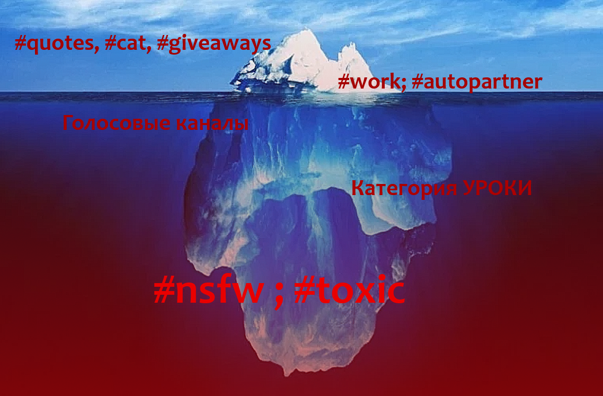

Что у нас за каналы?

На нашем сервере имеется много разных интересных каналов, некоторые вы могли заметить как появились спустя время, а некоторые были всё время. Однако есть ТАКИЕ экземпляры, о которых стоило бы поговорить отдельно...
#quotes, #cat, #giveaways
Верхушкой нашего айсберга стали каналы: Цитаты, Коты, Розыгрыши.В канале #quotes вы можете поделиться очень мудрой цитатой какого нибудь человека, так как слова ВЕЛИКИХ людей не должны стоять возле каких-то обыкновенных #photos.
#cat - Просто котики. Получите кота прописав команду !кот.
Небольшие розыгрыши, #giveaways, проводились пока-что только 1 раз. Не забывайте, что предложив хорошую идею вы тоже можете наполнить эти каналы смыслом, или создать даже более полезные каналы для нашего сервачка!
#work; #autopartner
Увидел новое сообщение @ Зашёл на сервер @ Опять #work и #autopartner @ Печалька...Почему не убрать эти два канала? Зачем они нужны? Ну со вторым всё просто, большая часть нашей аудитории пришла именно от бота Auto Partnership, который позволяет включить наш сервак в систему массовой рассылки приглашений, однако взамен он требует сохранить видимым для всех канал с рассылками, поэтому больше и чаще всего сообщения там.
А вот канал #work... В основном, там рассылаются сообщения о том что можно забрать деньги, но так как экономикой никто не пользуется, возможно в скором времени этот канал пропадёт.
Голосовые каналы
Ну здесь скорее всего хочу рассказать интересный факт: Зайдите в голосовой канал #create voice, и вам будет создан отдельный голосовой канал для вас и ваших друзей)Категория УРОКИ
Уроки... Зачем же нужны эти уроки? У теоретиков много версий - первая, возможно именно там проводились древние ритуалы по открытию третьего глаза... Другие говорят, что представители славянских народов использовали этот канал как прямой канал для молитв Перуну...#nsfw, #toxic
!!! Уберите несовершеннолетних и беременных детей подальше от экрана !!!В процессе эволюции, голые обезьяны перешли с преимущественного потребления растительной пищи на мясо животных. Сочное мясо - именно эта вещь заставляла первобытных людей охотится и нападать, становится всё более кровожадными и свыкаться с агрессивным и хищным образом жизни.
Вопреки тому, что мы давно не первобытные люди, придобитые нами инстинкты желают всадить кому-нибудь когти поглубже и сгореть пламенем ярче и ещё ярче... Именно для удовлетворения этих потребностей были созданы эти каналы.
В то время как в канале #toxic происходят граматические преступления, в канале #nsfw ваши глаза захотят скорее вытечь куда подальше от экрана...
Чтобы попасть в канал #nsfw, посетите канал #take-roles и выберите фиолетовую реакцию с значением "усмирить своего змея горыныча", но я вам КРАЙНЕ не рекомендую этого делать.
Думайте головой и желаю УДАЧИ!
[#take-roles][#quotes][#cat][#giveaways]
[#belarussian] - (Категория УРОКИ)
[#toxic]